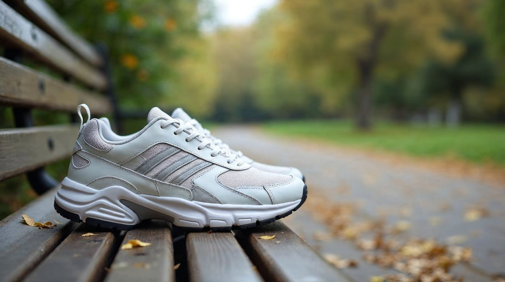
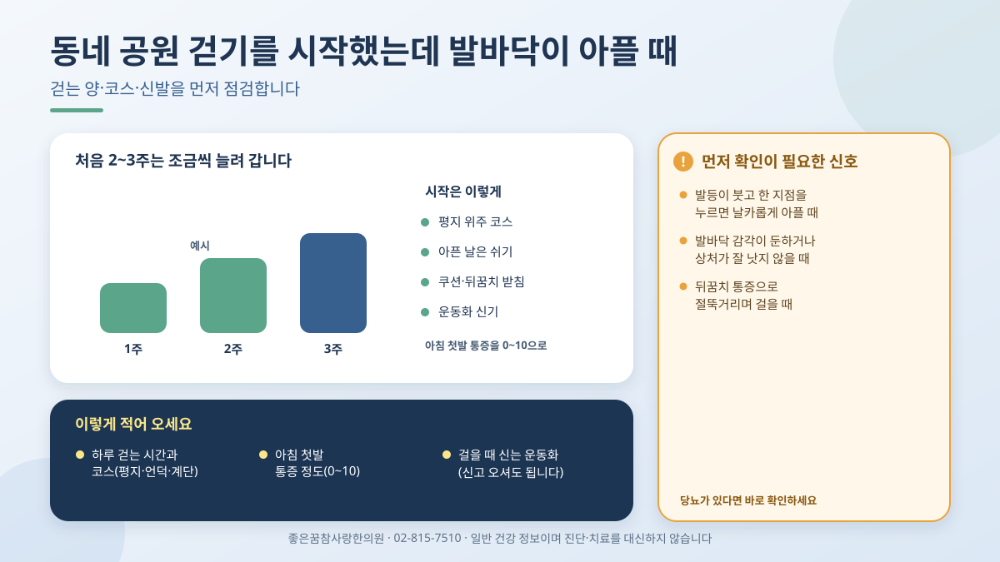

이종호 한의사 감수좋은꿈참사랑한의원 대표원장 (한의사 면허번호 19769)발행 2026-11-24 · 수정 2026-11-25
이 글의 차례
걷기를 새로 시작한 뒤 발바닥이 화끈거리거나 아침 첫발에 뒤꿈치가 찌릿하다면, 걷는 양을 잠시 줄이고 신발과 코스를 바꾸는 것부터 해 보시길 권합니다. 건강검진 뒤 상도근린공원 같은 동네 공원에서 의욕적으로 걷기를 시작했다가 일주일쯤 지나 이런 통증을 겪는 분이 많습니다.
걷는 양과 신발을 조절하면 아침 통증이 차츰 덜해지는 분이 많지만, 2~3주가 지나도 그대로이거나 절뚝거리며 걷게 되었다면 걷는 모습과 아픈 지점을 한 번 살펴보시는 것이 좋습니다. 당뇨가 있으면서 발바닥 감각이 둔해졌다면 통증 조절보다 확인이 먼저입니다.
왜 이런 불편이 생길 수 있나요
- 걷는 양을 갑자기 늘리면 발바닥을 받치는 근막과 뒤꿈치에 회복할 틈 없이 부담이 쌓입니다.
- 오르막과 계단이 섞인 길은 평지보다 발바닥과 종아리를 더 많이 씁니다.
- 쿠션이 적거나 뒤꿈치가 닳은 신발은 충격을 덜 흡수합니다.
- 종아리가 뻣뻣하면 발바닥이 더 당기기 쉽습니다.
- 자는 동안 짧아져 있던 발바닥 근막이 아침 첫걸음에 갑자기 늘어나면서 뒤꿈치가 찌릿하다는 설명이 많습니다.
- 최근 체중이 늘었거나 낮에 오래 서서 일하는 분은 이미 지친 발바닥으로 걷기를 더하게 됩니다.
먼저 이렇게 여쭙니다
- 걷기를 시작한 지 얼마나 되었고, 하루 몇 분 정도 걸으시나요?
- 걷는 길이 평지인가요, 오르막과 계단이 섞여 있나요?
- 아침에 일어나 첫발을 디딜 때 뒤꿈치가 아픈가요?
- 아픈 곳이 뒤꿈치인가요, 발바닥 가운데인가요, 발가락 쪽인가요?
- 오래 앉았다 일어설 때도 첫걸음이 아픈가요?
- 걷기용 운동화를 신으시나요, 평소 신발로 걸으시나요?
- 당뇨가 있거나 발 감각이 둔한 느낌이 있나요?
- 다시 오신 분께는 지난번 정한 걷기 시간을 어떻게 지키셨는지부터 이어서 여쭙니다.

일상에서 먼저 해 볼 수 있는 것
- 처음 2~3주는 걷는 시간을 조금씩 늘리고 아픈 날은 쉬기
- 아프지 않은 날이 이어지면 일주일에 5분 정도씩만 늘리기
- 오르막과 계단이 많은 길보다 평지 위주로 시작하기
- 쿠션과 뒤꿈치 받침이 있는 운동화 신기, 집 안에서도 쿠션 있는 실내화 신기
- 아침에 일어나 바로 걷기 전 앉아서 발목을 위아래로 10번쯤 움직이고 발가락을 젖혀 주기
- 자기 전과 아침에 발바닥과 종아리를 가볍게 늘려 주기
- 앉아서 작은 공을 발바닥 아래 두고 1~2분 굴리기(당뇨가 있다면 발바닥 상처부터 확인)
상황별 예시
- 예를 들어 건강검진에서 혈당과 체중 이야기를 듣고 첫 주부터 매일 한 시간씩 언덕 코스를 걷기 시작한 직장인의 경우, 열흘쯤 지나 아침 첫발에 뒤꿈치가 찌릿할 수 있습니다. 걷는 시간을 30분으로 줄이고 평지 코스로 바꾼 뒤 2주 정도 아침 통증을 적어 보는 것부터 시작할 수 있습니다.
- 예를 들어 은퇴 뒤 공원 걷기를 하루 일과로 삼은 어르신이 오래 신던 운동화를 그대로 신는 경우, 밑창이 닳아 뒤꿈치 충격이 커질 수 있어 신발 바닥이 고르게 닳았는지부터 함께 봅니다.
- 예를 들어 하루 종일 서서 일하고 퇴근 뒤 공원을 걷는 경우, 저녁 늦게 발바닥이 화끈거릴 수 있습니다. 걷는 시간을 쉬는 날 낮으로 옮기거나 평일에는 짧게 나눠 걷는 방법도 있습니다.
스스로 점검해 보세요
- 걷기를 시작하고 2주 안에 하루 걷는 시간을 두 배 넘게 늘렸다
- 아침에 일어나 첫발을 디딜 때 뒤꿈치가 찌릿하다
- 몇 걸음 걸으면 덜하다가 오래 걸은 뒤 다시 아프다
- 운동화 뒤꿈치 바깥쪽이 눈에 띄게 닳았다
- 종아리가 자주 뭉치거나 쥐가 난다
- 발바닥 감각이 둔하거나 작은 상처가 잘 낫지 않는다
앞의 다섯 가지는 걷는 양과 신발부터 조절해 볼 신호이고, 마지막 항목은 당뇨 여부와 함께 먼저 확인이 필요합니다.
한의원에서 함께 살필 수 있는 경우
- 걷기를 시작한 뒤 발바닥이나 뒤꿈치 통증이 이어지는 경우 걷는 양과 아픈 지점을 함께 살핍니다.
- 종아리가 잘 뭉치고 발이 차거나 붓는 경우 다리 전체의 긴장을 함께 살핍니다.
- 무릎이나 허리까지 불편해진 경우 걷는 자세를 함께 살핍니다.
좋은꿈참사랑한의원에서는 첫 방문 때 걷기를 시작한 시기와 하루 걷는 양, 코스, 아침 첫발 통증을 먼저 듣고 맥부터 짚어 봅니다. 그 뒤 서 있는 자세와 몇 걸음 걷는 모습, 신고 오신 운동화가 닳은 모양을 보고, 발바닥과 뒤꿈치에서 누르면 아픈 자리를 확인합니다.
필요하다고 판단될 때 초음파로 발바닥 근막과 뒤꿈치 주변을 살피고, 상태에 맞춰 침·약침·추나 등을 정합니다. 오래된 뒤꿈치 통증이라면 체외충격파를 쓸지도 진찰 후 함께 판단합니다. 귀가 전에는 걷는 양을 다시 늘리는 순서와 아침에 할 동작을 알려 드립니다.
얼마나 지켜보고 언제 상담할까요
- 걷는 양을 줄이고 신발을 바꾼 뒤 2주 정도 아침 첫발 통증을 0~10으로 적어 보세요.
- 2~3주가 지나도 아침 통증이 줄지 않거나 한 달 넘게 이어진다면 상담을 권합니다.
- 통증 때문에 걷기를 아예 그만두게 되었거나 절뚝거리게 되었다면 일찍 상담해 보세요.
- 발등이 붓고 한 지점이 날카롭게 아프면 바로 확인을 받으세요.
이렇게 기록해 오시면 상담이 쉬워집니다
- 하루 걷는 시간과 코스(평지, 언덕, 계단)
- 아침 첫발 통증 정도(0~10)를 날짜별로 적은 메모
- 걸을 때 신는 운동화(진료 때 신고 오셔도 됩니다)
- 통증이 유난히 심했던 날 걸은 코스와 시간
- 당뇨가 있는지 여부
이런 증상은 먼저 확인이 필요합니다
- 발등이 붓고 한 지점을 누르면 날카롭게 아픈 경우
- 발바닥 감각이 둔해지거나 상처가 잘 낫지 않는 경우(당뇨가 있다면 바로 확인)
이런 신호가 있으면 한의원보다 가까운 병원이나 응급실을 먼저 찾으세요.
관련 글
- 아침 첫발이 아픈 발바닥 통증은 초음파로 어떻게 확인하나요?
- 발바닥 통증은 어떤 종류가 있고 어떻게 구분해서 살피나요?
- 상도동 근처에서 걷기 습관을 만들고 싶을 때는 어떻게 시작하나요?

여쭙는 것
- 걷기를 시작한 지 얼마나 되었고, 하루 몇 분 정도 걸으시나요?
- 걷는 길이 평지인가요, 오르막과 계단이 섞여 있나요?
- 아침에 일어나 첫발을 디딜 때 뒤꿈치가 아픈가요?
생활에서 해 볼 것
- 처음 2~3주는 걷는 시간을 조금씩 늘리고 아픈 날은 쉬기
- 아프지 않은 날이 이어지면 일주일에 5분 정도씩만 늘리기
- 오르막과 계단이 많은 길보다 평지 위주로 시작하기
한의원에서 함께 살필 것
- 걷기를 시작한 뒤 발바닥이나 뒤꿈치 통증이 이어지는 경우 걷는 양과 아픈 지점을 함…
- 종아리가 잘 뭉치고 발이 차거나 붓는 경우 다리 전체의 긴장을 함께 살핍니다.
- 무릎이나 허리까지 불편해진 경우 걷는 자세를 함께 살핍니다.
먼저 확인이 필요한 신호
- 발등이 붓고 한 지점을 누르면 날카롭게 아픈 경우
- 발바닥 감각이 둔해지거나 상처가 잘 낫지 않는 경우(당뇨가 있다면 바로 확인)
한눈에 보는 표
| 구분 | 핵심 |
|---|---|
| 여쭙는 것 | 걷기를 시작한 지 얼마나 되었고, 하루 몇 분 정도 걸으시나요? 걷는 길이 평지인가요, 오르막과 계단이 섞여 있나요? |
| 생활에서 해 볼 것 | 처음 2~3주는 걷는 시간을 조금씩 늘리고 아픈 날은 쉬기 아프지 않은 날이 이어지면 일주일에 5분 정도씩만 늘리기 |
| 한의원에서 함께 살필 것 | 걷기를 시작한 뒤 발바닥이나 뒤꿈치 통증이 이어지는 경우 걷는 양과 아픈 지점을 함께 살핍니다. 종아리가 잘 뭉치고 발이 차거나 붓는 경우 다리 전체의 긴장을 함께 살핍니다. |
| 먼저 확인이 필요한 신호 | 발등이 붓고 한 지점을 누르면 날카롭게 아픈 경우 발바닥 감각이 둔해지거나 상처가 잘 낫지 않는 경우(당뇨가 있다면 바로 확인) |
자주 묻는 질문
아파도 참고 계속 걸어야 운동이 되나요?
통증을 참고 걷기보다 양을 줄이거나 하루 쉬고 다시 시작하는 쪽이 오래 걷는 데 도움이 될 수 있습니다.
깔창을 바꾸면 도움이 되나요?
발 모양과 걷는 습관에 따라 다릅니다. 평소 신는 신발을 신고 오시면 함께 살펴볼 수 있습니다.
맨발 걷기를 해 봐도 되나요?
발바닥 통증이 있을 때는 오히려 부담이 될 수 있고, 당뇨가 있다면 작은 상처도 조심해야 해 신발을 신고 걷는 것을 권합니다.
하루 쉬면 다시 처음부터 시작해야 하나요?
그렇지 않습니다. 쉬고 난 뒤에는 이전보다 조금 짧게 시작해 다시 늘려 가면 됩니다.
발바닥이 아픈 동안 걷기 대신 할 수 있는 운동이 있나요?
앉아서 하는 발목 운동이나 실내 자전거처럼 발바닥에 체중이 덜 실리는 움직임을 잠시 이어 가는 방법이 있습니다. 어떤 운동이 맞는지는 진료 때 상태를 보고 함께 정합니다.
좋은꿈참사랑한의원은 재진 때 지난번 이야기부터 이어서 여쭙니다. 진료시간과 예약은 오시는 길에서 확인하세요.
어디서 상담받을 수 있나요?
좋은꿈참사랑한의원은 서울 동작구 만양로2길 2 신성빌딩 3층·5층(서울 동작구 상도동, 7호선 상도역 3번 출구 근처)에 있습니다. 한의사 3명(이종호 대표원장, 조영기 수석진료원장, 정원영 진료원장)이 진료합니다. 진료시간은 평일 09:30~20:00(점심 13:00~14:00), 토·일·공휴일 09:30~15:00이며, 방문 전 전화로 확인을 권합니다. 예약은 네이버 예약, 카카오톡 상담, 전화 02-815-7510로 받습니다.
이 글은 일반적인 건강 정보이며 개인의 진단이나 치료를 대신하지 않습니다. 증상이 있거나 복용 중인 약이 있다면 진료를 통해 확인하세요. 치료 효과는 개인마다 다를 수 있습니다.
작성 기준: 일반적으로 알려져 있는 건강 정보를 참고해 정리했습니다(대표원장 감수). 증상 기록은 1~2주 동안 하루 1회, 비슷한 시간에 적어 오시면 지난 상태와 비교하기 쉽습니다.